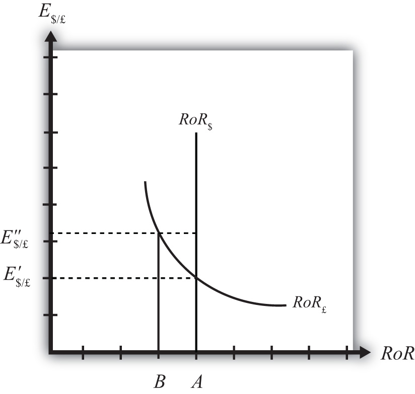

Any equilibrium in economics has an associated behavioral story to explain the forces that will move the endogenous variable to the equilibrium value. In the foreign exchange (Forex) model, the endogenous variable is the exchange rate. This is the variable that is determined as a solution in the model and will change to achieve the equilibrium. Variables that do not change in the adjustment to the equilibrium are the exogenous variables. In this model, the exogenous variables are E$/£e, i$, and i£. Changes in the exogenous variables are necessary to cause an adjustment to a new equilibrium. However, in telling an equilibrium story, it is typical to simply assume that the endogenous variable is not at the equilibrium (for some unstated reason) and then explain how and why the variable will adjust to the equilibrium value.
Suppose, for some unspecified reason, the exchange rate is currently at E″$/£ as shown in Figure 16.6 "Adjustment When the Exchange Rate Is Too High". The equilibrium exchange rate is at E′$/£ since at this rate, rates of return are equal and interest rate parity (IRP) is satisfied. Thus at E″$/£ the exchange rate is too high. Since the exchange rate, as written, is the value of the pound, we can also say that the pound value is too high relative to the dollar to satisfy IRP.
Figure 16.6 Adjustment When the Exchange Rate Is Too High
With the exchange rate at E″$/£, the rate of return on the dollar, RoR$, is given by the value A along the horizontal axis. This will be the value of the U.S. interest rate. The rate of return on the pound, RoR£ is given by the value B, however. This means that RoR£ < RoR$ and IRP does not hold. Under this circumstance, higher returns on deposits in the United States will motivate investors to invest funds in the United States rather than Britain. This will raise the supply of pounds on the Forex as British investors seek the higher average return on U.S. assets. It will also lower the demand for British pounds (£) by U.S. investors who decide to invest at home rather than abroad. Both changes in the Forex market will lower the value of the pound and raise the U.S. dollar value, reflected as a reduction in E$/£.
In more straightforward terms, when the rate of return on dollar deposits is higher than on British deposits, investors will increase demand for the higher RoR currency and reduce demand for the other. The change in demand on the Forex raises the value of the currency whose RoR was initially higher (the U.S. dollar in this case) and lowers the other currency value (the British pound).
As the exchange rate falls from E″$/£ to E′$/£, RoR£ begins to rise up, from B to A. This occurs because RoR£ is negatively related to changes in the exchange rate. Once the exchange rate falls to E′$/£, RoR£ will become equal to RoR$ at A and IRP will hold. At this point there are no further pressures in the Forex for the exchange rate to change, hence the Forex is in equilibrium at E′$/£.
If the exchange rate is lower than the equilibrium rate, then the adjustment will proceed in the opposite direction. At any exchange rate below E′$/£ in the diagram, RoR£ > RoR$. This condition will inspire investors to move their funds to Britain with the higher rate of return. The subsequent increase in the demand for pounds will raise the value of the pound on the Forex and E$/£ will rise (consequently, the dollar value will fall). The exchange rate will continue to rise and the rate of return on pounds will fall until RoR£ = RoR$ (IRP holds again) at E′$/£.
Jeopardy Questions. As in the popular television game show, you are given an answer to a question and you must respond with the question. For example, if the answer is “a tax on imports,” then the correct question is “What is a tariff?”